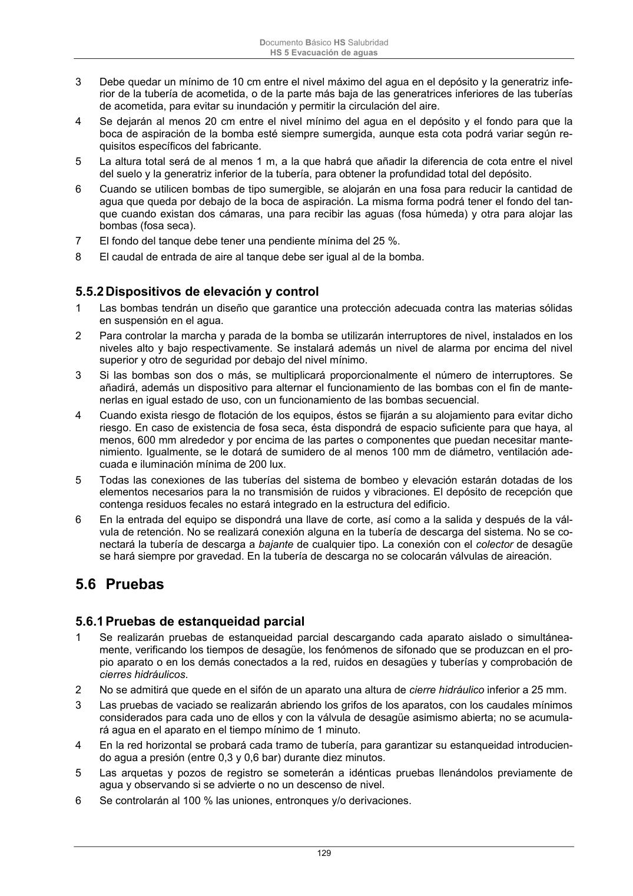

DB-HS · Fragmento de PDF p129 · versión 2022-06-14 · capa oficial
Formatos: JSON compacto · Markdown · PDF fuente
Ámbito del documento · texto del ámbito · documento y tablas
ID técnico a0289 · PDF pág. 129 · jerarquía no validada por persona · no es capítulo: sin_linea_de_encabezado · padre: raíz · literal original en el contenido: «5.5.2 Dispositivos de elevación y control»
5.5.2 Dispositivos de elevación y control 1 Las bombas tendrán un diseño que garantice una protección adecuada contra las materias sólidas en suspensión en el agua. 2 Para controlar la marcha y parada de la bomba se utilizarán interruptores de nivel, instalados en los niveles alto y bajo respectivamente. Se instalará además un nivel de alarma por encima del nivel superior y otro de seguridad por debajo del nivel mínimo. 3 Si las bombas son dos o más, se multiplicará proporcionalmente el número de interruptores. Se añadirá, además un dispositivo para alternar el funcionamiento de las bombas con el fin de mante- nerlas en igual estado de uso, con un funcionamiento de las bombas secuencial. 4 Cuando exista riesgo de flotación de los equipos, éstos se fijarán a su alojamiento para evitar dicho riesgo. En caso de existencia de fosa seca, ésta dispondrá de espacio suficiente para que haya, al menos, 600 mm alrededor y por encima de las partes o componentes que puedan necesitar mante- nimiento. Igualmente, se le dotará de sumidero de al menos 100 mm de diámetro, ventilación ade- cuada e iluminación mínima de 200 lux. 5 Todas las conexiones de las tuberías del sistema de bombeo y elevación estarán dotadas de los elementos necesarios para la no transmisión de ruidos y vibraciones. El depósito de recepción que contenga residuos fecales no estará integrado en la estructura del edificio. 6 En la entrada del equipo se dispondrá una llave de corte, así como a la salida y después de la vál- vula de retención. No se realizará conexión alguna en la tubería de descarga del sistema. No se co- nectará la tubería de descarga a bajante de cualquier tipo. La conexión con el colector de desagüe se hará siempre por gravedad. En la tubería de descarga no se colocarán válvulas de aireación.

PDF fuente redistribuible: copia fiel enlazada en esta página (SHA256 verificado).